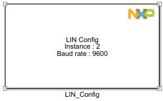
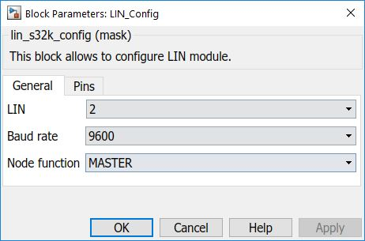
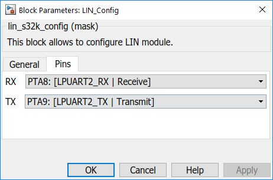

LIN Configuration Block
Local Interconnect Network
The main functionality of the block is to configure the LIN module.
Block Image
Inputs:
- None
Outputs:
- None
Parameters and Dialog Box
The block dialog consists of the following tabs:
General
The General Settings tab contains the following parameters:
LIN
Select which LIN(LPUART) module to use.
Baud rate
Available speed selections for the serial baud rate in kbps.
Note: for LIN, typically 9600 to 19200.
Node function
Select Master or Slave.
Pins
The list of available pins depends on the selected LIN Module (LPUART pins).
Block Dependency
- None
Block Miscellaneous Details
- None